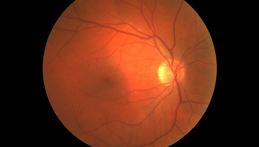
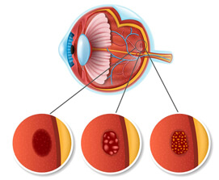

Vědci hodnotili vliv počítačů a gadgetů na výsledky laserové korekce zraku. Bezprostředně po operaci zcela mizí krátkozrakost, dalekozrakost a astigmatismus, ale čím více pacient pracuje s počítačem, tím menší je efekt operace. Po 1-2 letech musí někteří pacienti znovu nosit kontaktní čočky a brýle.
Studií se zúčastnilo více než 5 000 subjektů, které podstoupily laserovou operaci očí. Všichni trávili více než 8 hodin denně u počítače, televize a smartphonu. Odborníci zkoumali jejich diagnózy a dospěli k neuspokojivým závěrům.
Říká Ladislav Werner, ředitel oftalmologické kliniky.
Před operací měli všichni účastníci mírné až středně těžké zrakové postižení: krátkozrakost, dalekozrakost, astigmatismus, potíže se zaměřením na předměty atd. Po laserové korekci téměř okamžitě začali znovu vidět jasně. 80 % přestalo nosit brýle a kontaktní čočky, ale ti, kteří se zabývali mentální prací, zaznamenali pokles efektu operace po 1-2 letech. V některých případech se účinek výrazně zhoršil.
JSOU TO TYPICKÉ PŘÍPADY.

Takhle viděla svět 39letá žena, která se účastnila výzkumu. Je účetní a tráví 7-11 hodin denně u počítače. Před korekcí zraku nosila kontaktní čočky.

Před rokem přišla na naši kliniku na korekci dalekozrakosti pomocí laserové operace, ale po 2 letech opět potřebovala kontaktní čočky.

Zde je snímek sítnice dalšího pacienta, 27letého programátora, který ke mně přišel do ordinace korigovat astigmatismus laserem.

Na určitou dobu mu operace pomohla a naučil se žít bez brýlí.
Už po roce ale opět přišel na naši kliniku na druhou operaci. Kvůli dlouhým hodinám práce u počítače se mu zrak zhoršil opět.
Takových příběhů je spousta. Práce u počítače postupně snižuje účinek chirurgické korekce zraku. Když člověk nehybně sedí a dívá se na obrazovku několik hodin, ciliární sval, který podpírá čočku, se stáhne. Tento sval je zodpovědný za akomodaci, tedy za schopnost vidět na různé vzdálenosti. Časem tato schopnost slábne a zrak se prudce zhoršuje.
Po delší práci u počítače se také oslabuje prokrvení čočky a sítnice, což zhoršuje krátkozrakost a dalekozrakost a v průběhu let zvyšuje riziko vzniku šedého zákalu, zeleného zákalu a dalších nebezpečných onemocnění.
Pokud by naši pacienti přestali používat počítač a sledovat televizi, efekt laserové operace by byl delší, ale 70 % subjektů spojuje profesi s intelektuální prací a odmítnutí úspěchů civilizace by vedlo k větším problémům než ke ztrátě zraku. Nedostatek peněz, pocit poražení atd. V moderním světě je nemožné žít bez gadgetů, jinak by svět přišel o miliony vědců, programátorů, designérů, novinářů, finančních analytiků atd.
Jak si ale udržet zrak při práci u počítače co nejdéle?
Řeknu vám to na rovinu, operace není nejlepším řešením. Péče o oči musí vycházet zevnitř. To je možné díky biologicky aktivním komplexům a doplňkům se stopovými prvky, které obnovují zrak.
JAKÉ POTRAVINY MÁM JÍST PRO ZDRAVÉ OČI?
Nejúčinnějšími mikroživinami pro udržení dobrého zraku jsou lutein, zeaxanthin, vitamín A a borůvkové antokyany. Posilují ciliární sval, zvyšují prokrvení oční bulvy, zmírňují únavu očí po delší námaze a snižují riziko zeleného zákalu a šedého zákalu o 40 %. Tyto produkty se často používají ve výrobcích pro zdraví očí, ale bohužel výrobci ne vždy používají správné dávkování.
Nevyváženost luteinu a zeaxantinu v určitých potravinách se může někdy obrátit proti nim. Zvláště v kombinaci s vitamíny. Jeho nadbytek je stejně škodlivý jako nedostatečné prokrvení očí. Zrakové svaly jsou přetížené a zdroje sítnice a čočky se vyčerpávají ještě rychleji.
Jako chemik mohu doporučit výborný přípravek pro zlepšení zraku s optimálním obsahem složek - kapsle . Obsahují lutein, zeaxantin, extrakt z borůvek, vitamín A a další prospěšné vitamíny a minerály přesně v takovém množství, jaké naše oči potřebují, aby se zbavily každodenní únavy, obnovily krevní oběh a udržely ciliární sval v dobré kondici.
Abyste za měsíc lépe viděli, užívejte 1 kapsli 2krát denně po jídle. Podle našich pacientů se už po 1-2 týdnech vidění stává jasnějším, obnovuje se schopnost vidět drobné písmo a rozlišovat barevné nuance.
Díky již 342 pacientů s počáteční deformací zraku přestalo nosit brýle a kontaktní čočky a více než 2000 lidí již zrak opravilo a dokončilo kurzovou léčbu.
Účinek je kumulativní. Budete potřebovat 1-2 kúry ročně, v závislosti na stavu vašich očí. Po 2-3 kúrách se váš zrak zlepší o 60 %, i když trávíte více než 7-8 hodin denně u počítače a odpočíváte u televize po náročném pracovním dni.
Nyní oficiální výrobce zahajuje akci, kdy lze kapsle zakoupit s 50% slevou! si můžete koupit odkudkoli na světě bez zprostředkovatelů a s doručením kurýrem přímo k vám domů. Platba se provádí až po obdržení zboží.
POSPĚŠ SI! Akční balíčky brzy skončí.
Aktualizace: zbývá pouze 37 od .
Vyplňte formulář a náš specialista vás bude brzy kontaktovat. Kurýr doručí objednávku domů, platba při převzetí.
Chtěl jsem se objednat na operaci korekce zraku, ale teď už nechci... Děkuji za doporučení. Ušetřím spoustu peněz.
Pavel, haha! Po přečtení tohoto článku jsem také změnil názor na operaci! Pod nůž se mi nechce, když se obejdu i bez toho...
Myslím, že stále musíte jít do nemocnice na operaci, pokud to lékař řekl. Co když jste alergičtí na nějaké léky? To je můj názor.
Karel, tyto kapsle pije celá moje rodina a jsou vhodné pro každého. Jsou přírodní! Jako vitamíny. V nemocnici vám okamžitě předepíší buď operaci, nebo chemoterapii.
Tyto kapsle jsou fantastické! Přijde mi, že vidím lépe i ve tmě.
Úplně se vidím v tom, co se tu píše. Jsem programátor a neustále u počítače. V noci mě tak bolí oči, že je chci celý den zavřít a neotvírat.
Přípravek mi přišel velice rychle! Kurýr byl velmi přesný!
Děkuji! Objednával jsem pro sebe a pro manželku. Oba špatně vidíme.
Doufám, že mi vrátí můj zrak, který se zhoršil na univerzitě! Při psaní diplomové práce jsem málem oslepl :(
Nosím kontaktní čočky, ale jsou velmi nepříjemné! Doktor mi řekl, že pokud je budu nadále používat, rohovka se ztenčí. Brýle jsou ještě horší. Myslíte, že mi tyto kapsle pomůžou?
Zkuste si čočky občas vyjmout alespoň na 1-2 hodiny denně. Dělejte oční cvičení. Podívejte se do dálky, pak se zaměřte na něco, co stojí poblíž, a tak dále 10-15krát. Vygooglujte oční cvičení. Samozřejmě také stojí za to zkusit kurz a vybrat si vhodné oční kapky pro vás. To vše dohromady mi pomohlo. Můj zrak je perfektní a brýle už nenosím.
Jana, souhlasím! Oční gymnastika a kurz dobře fungujou spolu. Moje sestra takto zlepšila svou vizi z mínus 5 do mínus 2.